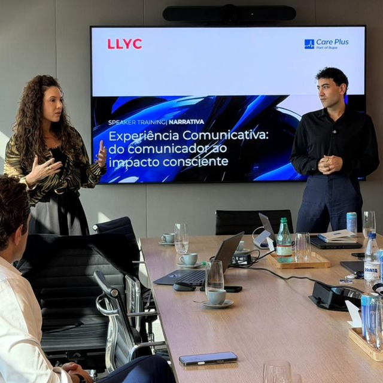
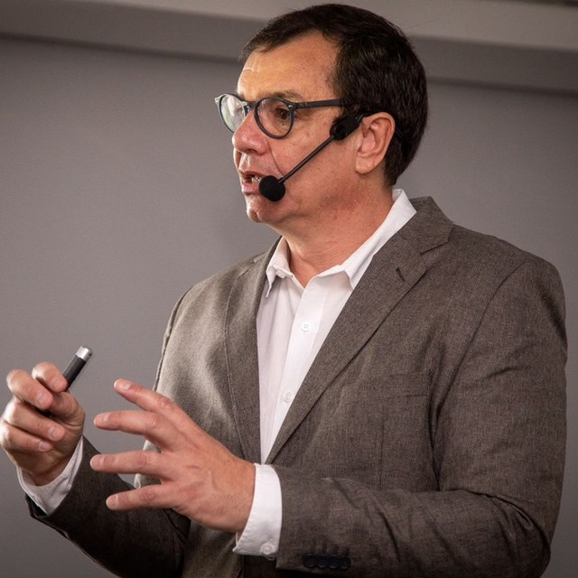
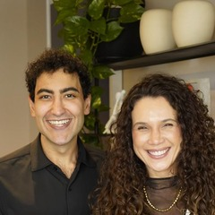
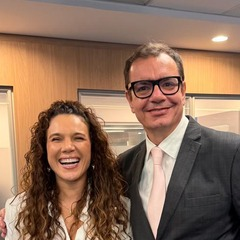
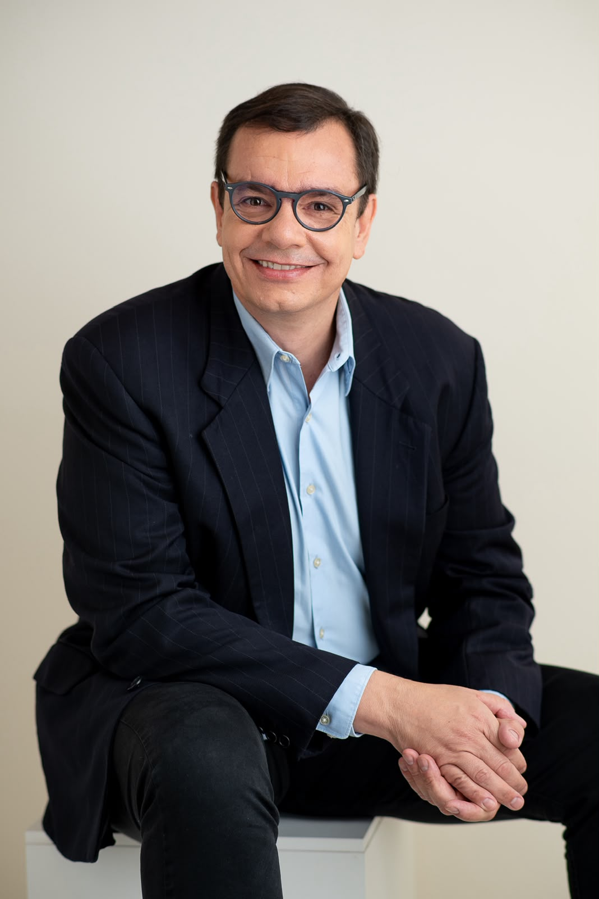
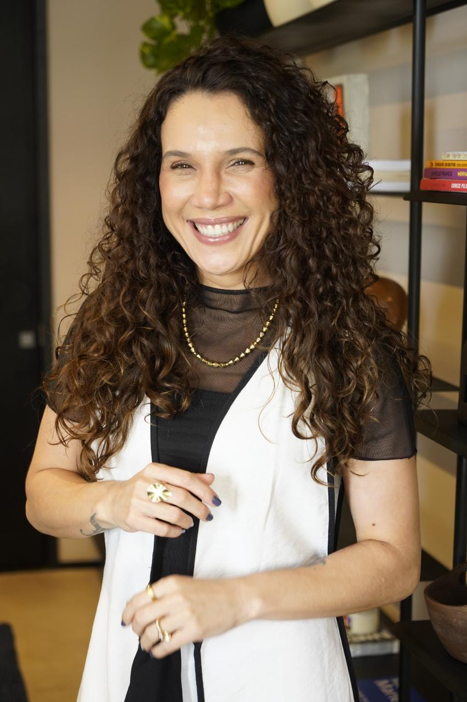
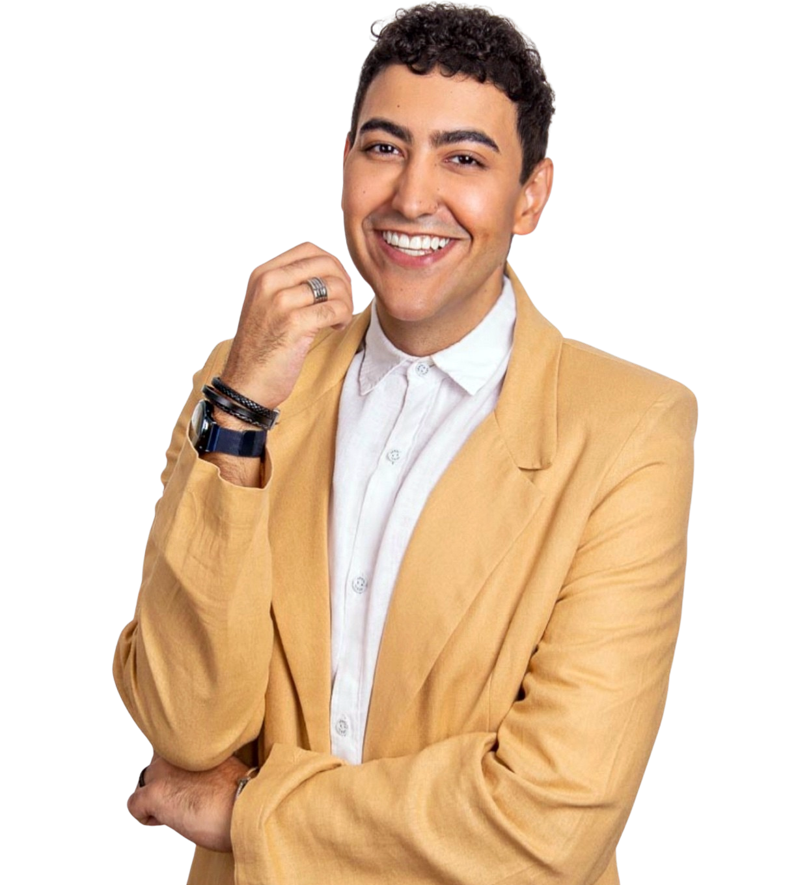
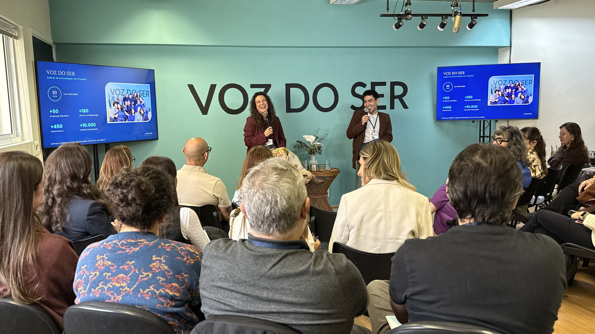

Voz do Ser
Programa Voz e Comunicação Efetiva
Expressividade de impacto consciente e estado de presença.
Programa individual para Milena Cosmo · Neoenergia
Role para ver

Expressividade de impacto consciente e estado de presença.
Milena precisa assumir uma demanda que exige falar ao microfone, uma situação que hoje gera muito desconforto. Esse medo costuma vir de padrões emocionais e mentais que aparecem no corpo, na respiração e na voz justamente na hora da exposição.
Por isso, o programa começa entendendo a origem desse bloqueio, pela Terapia da Comunicação, e depois desenvolve, na prática, os recursos vocais, corporais e expressivos para que a Milena fale com segurança, presença e naturalidade, em qualquer tipo de microfone.


Os dois caminham para o mesmo lugar e têm a mesma carga horária: 8 horas de treinamento. O que muda é o ritmo.

Sessão conduzida por dois Terapeutas da Comunicação do Voz do Ser para compreender o que está por trás do medo de falar ao microfone. São investigados os aspectos emocionais, os padrões mentais e a forma como a Milena se relaciona com a exposição. Também é feita uma avaliação da voz, da comunicação e da expressividade, identificando os recursos que ela já tem e os pontos a desenvolver.
O resultado é um plano de trabalho personalizado, que orienta as sessões práticas seguintes.

Encontros práticos e progressivos, em que a Milena desenvolve, passo a passo, consciência, controle e segurança na própria voz e na expressividade.
Sessão para colocar em prática tudo o que foi desenvolvido, em situações reais de uso do microfone.
Quem tem tempo até a entrega e quer um processo gradual, com prática entre os encontros para consolidar os novos hábitos de voz e expressão.
O mesmo conteúdo das sessões práticas do Formato 1, concentrado em um único dia de imersão.
A mesma sessão inicial do Formato 1: compreender o que está por trás do medo de falar ao microfone e avaliar a voz, a comunicação e a expressividade, resultando no plano de trabalho personalizado.
Quem precisa de resultado em menos tempo, ou prefere uma experiência intensa, em que a prática presencial é o centro do processo.



O investimento é o mesmo na Jornada Progressiva e na Imersão Presencial. A escolha entre eles é de ritmo, não de preço.

Estamos à disposição para escolher o formato e marcar o encontro inicial.